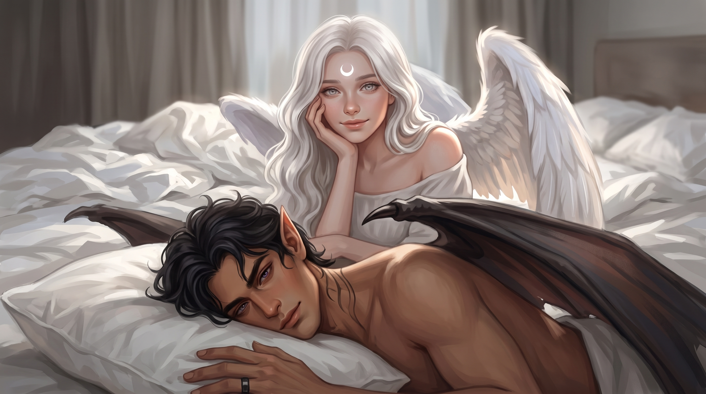

Обо мне
Привет! Меня зовут Селена. Я — ведьма с болот, обожающая вселенную ACOTAR, темное фэнтези и эстетику «Эфирной Луны». Здесь я делюсь своими темами, расширениями и ботами для SillyTavern. Создано с любовью и капелькой магии. 🦇🌙
🎨 Мои Темы
Темы оформления для SillyTavern — от тёмных фэнтези до уютных таверн.

Moonlit Tavern
Глубокий фиолетовый, золото, частицы лунного света. Полная перерисовка интерфейса.
🔧 Мои Расширения
Плагины и скрипты для SillyTavern — расширяют функционал таверны.
Scene Panel
Панель сцены: календарь, место, время, погода, кто рядом, открытые нити. ИИ обновляет тегом [[scene: ...]].
Lorebook Sync (планируется)
Синхронизация лорбуков между чатами и экспорт в Notion/Obsidian.
Новое расширение
Есть идея? Напиши мне.
🤖 Мои Боты
Персонажи для SillyTavern. Пока пусто — наполняю по мере готовности.
Скоро...
Новые персонажи появятся здесь.
Скоро...
Новые персонажи появятся здесь.
Скоро...
Новые персонажи появятся здесь.
⏳ Илион
Мир песков времени
Илион — это исходный мир для моих историй и ботов. Древние руины, пески, что помнят каждый шаг, и луна, что никогда не заходит.
Здесь будут: карта, хроники, пантеон, расы, магия песков, фракции.